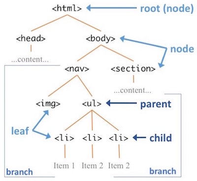

Chapter 13 Modello a oggetti del documento (DOM)
Lo scopo principale di usare JavaScript in una web page e’ rendere quella pagina interattiva: il linguaggio JavaScript e’ usato per programmare decisioni logiche che influenzeranno cio’ che viene mostrato nella pagina. Lo fa principalmente cambiando l’HTML renderizzato dal browser. Per esempio, JavaScript puo’ essere usato per cambiare il testo dentro un <p>, aggiungere altri elementi <li> a una lista, o dare a un <div> un nuovo attribute CSS class. La rappresentazione programmatica degli elementi HTML attualmente mostrati dal browser e’ conosciuta come Document Object Model (DOM). Nel web programming, il codice JavaScript e’ usato per modificare il DOM (gli elementi HTML attualmente mostrati dal browser) in risposta all’input dell’utente, rendendo cosi’ la pagina interattiva. Questo capitolo introduce il Document Object Model e come usare JavaScript per manipolarlo tramite interazioni guidate dall’utente.
13.1 La DOM API
Come dovresti ricordare dal Capitolo 3, gli elementi HTML possono essere annidati, permettendoci di considerare una web page come un “tree” di elementi:

- Un tree e’ una data structure gerarchica, in cui ogni elemento (chiamato node) contiene riferimenti a elementi child. Seguendo la metafora arborea, l’“inizio” del tree si chiama root node, le sequenze gerarchiche di nodi si chiamano branches, e un node che non ha children si chiama leaf.
Considerare il contenuto di una web page come un tree di elementi HTML e’ un modo per model (rappresentare) la struttura di quelle informazioni. Questo particolare modello di un web document (come tree di object nodes) si chiama Document Object Model, o DOM in breve. Per molti aspetti il DOM e’ l’HTML (anche se l’HTML renderizzato nel browser, non il source code .html che hai scritto)! Quindi possiamo riferirci al contenuto della web page come “il DOM”, e a un elemento HTML come a un “DOM element”.
- Nota che anche il contenuto “plain text” (ad es. quello dentro un tag
<p>) e’ considerato un node nel DOM tree—sono “text content” nodes (invece di “element nodes”).
Inoltre, il DOM fornisce anche una Application Programming Interface (API) che permette alle applications di interagire programmaticamente (ad es. tramite codice JavaScript) con esso: accedendo e manipolando il tree di elementi. Come potresti ricordare da corsi precedenti, un’API e’ spesso un insieme di functions e variables che possono essere usate per dare istruzioni a un programma. La DOM API non fa eccezione: e’ un gruppo di functions che puoi chiamare e di variables (di solito properties di un Object) che puoi modificare per cambiare il contenuto web renderizzato. Scrivi codice per chiamare queste functions allo scopo di rendere una pagina interattiva.
Global Variables
Puoi accedere programmaticamente all’API in JavaScript usando un set di global variables. Le global variables sono variables con scope “globale”: sono disponibili ovunque nel programma (non solo dentro una function particolare).
Una regola importante di programming style e’ minimizzare l’uso delle global variables. Cerca di evitare di creare troppi nuovi globals!
Le global variables in JavaScript sono quasi sempre Objects che hanno methods come values. Per esempio, il linguaggio JavaScript stesso fornisce un object globale Math che include diverse function properties (ad es. sqrt(), floor(), ecc.).
console.log( typeof Math ); //=> 'object'
console.log( typeof Math.sqrt ); //=> 'function'
console.log( Math.sqrt(25) ); //=> 5- Infatti, l’oggetto
consolee’ un’altra global variable fornita dal JavaScript runtime (sia nel browser sia in Node.js)!
Il web browser fornisce anche diverse global variables che puoi usare. Per esempio window e’ un object globale che rappresenta il browser stesso. Puoi usare questo object per ottenere informazioni sul browser:
/* properties di esempio */
let width = window.innerWidth; //larghezza del viewport
let height = window.innerHeight; //altezza del viewport
var url = window.location.href; //url per questa pagina
/* functions di esempio */
window.alert("Buu!"); //mostra un popup. Non usarlo.
window.scrollTo(0, 1000); //scroll a una posizione
window.setTimeout(callback, 1000); //esegue la callback dopo un delay
window.setInterval(callback, 1000); //esegue la callback ripetutamente dopo un intervallo
Anche se questi esempi sono inclusi per completezza, la maggior parte delle functions di window sono usate raramente e andrebbero evitate. I popup con la function window.alert() sono ineleganti, interrompono le azioni dell’utente e producono una bad user experience—dovresti invece usare opzioni di alerting dentro la finestra (come mostrare un <p class="alert">). Le functions di controllo del browser come scrollTo() sono non standard e possono variare drasticamente tra sistemi e piattaforme. Usa cautela quando usi le functions di window!
13.2 DOM Manipulation
Mentre window rappresenta il Browser, il DOM stesso e’ rappresentato dall’object globale document—document e’ il DOM (l’HTML corrente renderizzato nel browser). Accedi alle properties e chiami i methods di questo object per manipolare il contenuto mostrato nel browser!
Referenziare elementi HTML
Per manipolare gli elementi DOM in una pagina, devi prima ottenere un reference all’elemento che vuoi cambiare—cioe’ ti serve una variable che si riferisca a quell’elemento. Puoi ottenere queste references usando una delle “selector” functions di document:
//elemento con id="foo"
let fooElem = document.getElementById('foo');
//elementi con class="row"
let rowElems = document.getElementsByClassName('row'); //nota il plurale!
//elementi <li>
let liElems = document.getElementsByTagName('li'); //nota il plurale!
/*il modo piu' facile e' riusare i CSS selectors! */
let cssSelector = 'header p, .title > p'; //una string di un CSS selector
//seleziona il PRIMO elemento che corrisponde al css selector
let elem = document.querySelector(cssSelector);
//corrisponde a TUTTI gli elementi che matchano il css selector
let elems = document.querySelectorAll(cssSelector);document.querySelector()e’ di gran lunga il metodo piu’ flessibile e facile da usare: puo’ fare tutto cio’ che fanno gli altri metodi (basta passare un selector di id, class o element). Dovresti usare semprequerySelector().Nota che i metodi che restituiscono piu’ nodes (ad es.
querySelectorAll) restituiscono un objectNodeList. Anche se e’ simile a un array (puoi accedere agli elementi via index con bracket notation e ha una property.length), non e’ un array: quindi non supporta methods comeforEach()emap()su tutti i browser. Se devi iterare su unaNodeList, usa unforloop normale. Ma in pratica, e’ molto piu’ probabile lavorare con un singolo elemento alla volta.
Modificare elementi HTML
Una volta ottenuto un reference a un elemento, accedi alle properties e chiami i methods su quell’object per modificarne lo stato nel DOM—che a sua volta modifichera’ come e’ attualmente visualizzato nella pagina. Quindi, modificando questi objects, stai cambiando dinamicamente il contenuto della web page!
Importante: impostare queste properties non cambia il file .html source code! Cambiano solo gli elementi DOM renderizzati (pensa: il contenuto in memoria del computer, non quello in un file). Se ricarichi la pagina, il contenuto tornera’ a come e’ specificato nel file .html—a meno che non venga caricato anche lo script che modifica il DOM. Cio’ che vedi nella pagina e’ l’HTML con le modifiche JavaScript applicate.
Cambiare il contenuto
Puoi usare JavaScript per accedere e modificare il contenuto di un elemento DOM (ad es. cio’ che sta tra start e close tag):
//ottieni una reference al PRIMO elemento <p>
let elem = document.querySelector('p');
console.log(elem); //per dimostrazione
let text = elem.textContent; //il contenuto testuale dell'elem
elem.textContent = "Questo e' contenuto diverso!"; //cambia il contenuto
let html = elem.innerHTML; //contenuto che include HTML
elem.innerHTML = "Questo e' contenuto <em>diverso</em>!"; //interpretato come HTMLLa property textContent dell’elemento si riferisce a tutto il contenuto, ma considerato come “plain text”: questo significa che e’ una property “safe”: puoi assegnare stringhe che contengono codice HTML (ad es. <em>Ciao</em>), ma quel codice verra’ escaped e non interpretato come HTML (invece i simboli < e > saranno scritti come se avessi usato le HTML entities). La property .innerHTML, invece, non e’ “safe”: qualsiasi HTML incluso nella String che assegni verra’ convertito in elementi DOM. Questo la rende una property da evitare a meno che tu non sia assolutamente certo che il contenuto provenga da una fonte affidabile.
La property
innerHTMLandrebbe usata principalmente per includere elementi inline come<em>o<strong>. Per contenuti HTML piu’ complessi, e’ piu’ pulito (separation of concerns!) creare esplicitamente nuovi elementi—vedi sotto per dettagli.Puoi “svuotare” il contenuto di un elemento impostando il suo contenuto a una stringa vuota (
''):let alertElem = document.querySelector('.alert'); alertElem.textContent = ''; //nessun alert!
Cambiare gli attributes
Puoi anche cambiare gli attributes dei singoli elementi. Ogni attribute definito nella specifica HTML e’ tipicamente esposto come property dell’object elemento:
//ottieni una reference all'elemento `#picture`
let imgElem = document.querySelector('#picture');
//accedi all'attribute
console.log( imgElem.src ); //stampa la source dell'immagine
//modifica l'attribute
imgElem.src = 'my-picture.png';
Non puoi accedere direttamente agli attributes element.class o element.style in questo modo; vedi sotto per i dettagli su come cambiare il CSS di un elemento.
In alternativa puoi modificare gli attributes degli elementi usando i metodi getAttribute() (passando quale attribute accedere) e setAttribute() (passando quale attribute modificare e che value assegnare):
let imgElem = document.querySelector('#picture');
imgElement.setAttribute('src', 'my-other-picture.png'); //imposta il src
console.log( imgElem.getAttribute('src') ); //=> 'my-other-picture.png'
//il metodo `hasAttribute()` restituisce un boolean.
let isThick = document.querySelector('svg rect')
.hasAttribute('stroke-width'); //variables anonime chainateQuesti metodi ti permettono di interagire con attributes non definiti dalla spec HTML, come gli attribute data-. Tuttavia, non funzionano con alcuni attributes degli elementi (come l’attribute value di un elemento <input>). Altri elementi possono avere DOM properties speciali: vedi la DOM Documentation per una lista delle HTML interfaces.
Cambiare il CSS di un elemento
E’ possibile modificare le CSS classes (e anche lo styling inline) di un elemento. Ma invece di usare la property class come con gli altri attributes, accedi alla property classList. Nei browser moderni (IE 10 o successivi), questa property supporta i metodi .add() e .remove() per aggiungere e rimuovere class dalla lista:
//accedi alla lista delle class
let classList = elem.classList;
//aggiungi una class
elem.classList.add('small'); //aggiungi una singola class
elem.classList.add('alert','alert-warning'); //aggiungi class multiple (non su IE)
//rimuovi una class
elem.classList.remove('small');
//"toggle" (aggiungi se manca, rimuovi se presente)
elem.classList.toggle('small');Anche se IE 10+ supporta questi metodi, non supporta multiple arguments (quindi non puoi aggiungere piu’ class in una singola chiamata). Se devi supportare browser piu’ vecchi (inclusa qualsiasi versione di IE), puoi invece modificare la property
.classNamecome se fosse una String://fallback per IE (tutti) var classes = elem.className; classes += ' '+ 'sweet sour'; //modifica la stringa (append!) elem.className = classes; //ri-assegnaI metodi
classListfunzionano perfettamente su Microsoft Edge.
E’ anche possibile accedere e modificare singole CSS properties di elementi tramite la property style dell’elemento DOM. .style fa riferimento a un Object le cui keys sono i nomi delle CSS property (scritti in camelCase invece che in kabob-case)
let h1 = document.querySelector('h1');
h1.style.color = 'green';
h1.style.backgroundColor = 'black'; //non `.background-color`In generale, dovresti modificare il CSS di un elemento cambiandone la class, piuttosto che modificando specifiche style properties.
Modificare il DOM Tree
Oltre a modificare i singoli elementi DOM, e’ anche possibile accedere e modificare il DOM tree stesso! Cioe’, puoi creare nuovi elementi e aggiungerli al tree (leggi: web page), rimuovere elementi dal tree, o estrarli dal tree e inserirli da un’altra parte!
Per prima cosa, nota che ogni elemento DOM JavaScript ha properties read-only che si riferiscono al suo parent, ai children e ai sibling elements:
<main>
<section id="first-section">
<p>Primo paragrafo</p>
<p>Secondo paragrafo</p>
</section>
<section id="second-section"></section>
<main>//ottieni una reference alla prima section
let firstSection = document.querySelector('#first-section');
//ottieni una reference al node "parent"
let main = firstSection.parentElement;
console.log(main); //<main>...</main>
//ottieni una reference agli elementi child (2 paragrafi)
let paragraphs = firstSection.children;
console.log(paragraphs.length); //2
console.log(paragraphs[0]); //<p>Primo paragrafo</p>
//ottieni una reference al sibling successivo
let sectionSection = firstSection.nextElementSibling;
console.log(secondSection); //<section id="second-section"></section>Nota che queste properties riguardano solo gli elementi HTML—i text content nodes vengono ignorati. Puoi invece usare le properties equivalenti
parentNodeechildNodesper considerare anche i text content nodes.Il contenuto SVG non supporta
parentElement, ma supportaparentNode.
Puoi anche chiamare methods per creare e aggiungere nuovi elementi DOM HTML al tree. La function document.createElement() e’ usata per creare un nuovo elemento HTML. Tuttavia questo elemento non viene creato come parte del tree (dopotutto non hai specificato dove inserirlo nella pagina)! Quindi devi anche usare un metodo come appendChild per aggiungere quel nuovo elemento come child di un altro elemento:
//crea un nuovo <p> (non ancora nell'albero)
let newP = document.createElement('p');
newP.textContent = "Sono nuovo!";
//crea un Node con solo textContent (non un elemento HTML, solo testo)
let newText = document.createTextNode("Sono vuoto");
let main = document.querySelector('main');
main.appendChild(newP); //aggiungi elemento DENTRO (in fondo)
main.appendChild(newText); //aggiungi il testo dentro, DOPO il <p>
//aggiungi il nuovo node anonimo PRIMA dell'elemento. I parametri sono: (new, old)
main.insertBefore(document.createTextNode("Primo!"), newP);
//sostituisci il node. I parametri sono: (new, old)
main.replaceChild(document.createTextNode('buh'), newText);
//rimuovi il node
main.removeChild(main.querySelector('p'));Il metodo appendChild() e’ considerato piu’ pulito che modificare direttamente la property innerHTML, perche’ permette di modificare il DOM tree senza cancellare cio’ che c’era prima. Una pratica comune e’ usare document.createElement() per creare un elemento block, poi impostare il innerHTML di quell’elemento con il suo contenuto (che puo’ includere elementi inline), e infine usare appendChild per aggiungere il nuovo block element al tree nella posizione desiderata.
Accessibility
Le considerazioni sull’accessibilita’ del contenuto dinamico (incluso aria-live) sono trattate nel capitolo Accessibilita’ dei siti web.
13.3 Ascoltare gli Eventi
Per rendere una pagina interattiva (cioe’ capace di cambiare in risposta alle azioni dell’utente), devi essere in grado di rispondere agli user events. Ogni volta che un utente interagisce con un computer, il sistema operativo annuncia quell’interazione come un event—l’event di un button cliccato, l’event del mouse che si muove, l’event di un tasto della tastiera premuto, ecc. Questi eventi vengono broadcast a tutto il sistema, permettendo a qualsiasi application (incluso il browser) di “respond” all’occorrenza dell’event, ad esempio eseguendo una specifica function JavaScript.
Quindi, per rispondere alle azioni dell’utente (e agli events che queste azioni generano), dobbiamo definire una function che verra’ eseguita quando l’event si verifica. Definisci una function normalmente, ma la function non verra’ chiamata da te come passo specifico dello script. Invece, la function che specifichi verra’ eseguita dal sistema quando si verifica un event, in un momento indeterminato nel futuro. Questo processo e’ noto come event-driven programming. E’ anche un esempio di asynchronous programming: in cui gli statements non sono eseguiti in un singolo ordine uno dopo l’altro (“synchronously”), ma possono avvenire “out of order” o persino allo stesso tempo! (Per maggiori dettagli su asynchronous programming, vedi Chapter 14).
Per fare in modo che il tuo script risponda agli user events, devi register an event listener. E’ un po’ come seguire qualcuno sui social media: specifichi che vuoi “ascoltare” gli aggiornamenti da quella persona e cosa vuoi fare quando “senti” qualche novita’.
- Specificare che vuoi che Slack ti notifichi quando il tuo nome viene menzionato e’ un’altra buona analogia!
La DOM API ti permette di registrare un event listener chiamando .addEventListener() su un elemento selezionato (ad es. sull’elemento che vuoi ascoltare). Questo metodo prende due argomenti: una string che rappresenta il tipo di event che vuoi ascoltare, e una callback function da eseguire quando senti quell’event:
//una callback function (con nome)
function onClickCallback() {
console.log("Mi hai cliccato!");
}
//ottieni una reference all'elemento che vogliamo "ascoltare"
let button = document.querySelector('button');
//registra un listener per eventi 'click'
button.addEventListener('click', onClickCallback);Quando il button viene cliccato dall’utente, “gridera’” un event
'click'(“Sono stato cliccato! Sono stato cliccato!”). Poiche’ hai configurato un listener (un alert/notification) per questa occorrenza, il tuo script potra’ fare qualcosa—e quel qualcosa sara’ eseguire la callback function specificata.E’ come se avessi dato a qualcuno una ricetta dicendo: “quando ti chiamo, prepara questa torta!”
E’ molto piu’ comune usare una anonymous function come callback:
let button = document.querySelect.select('button'); button.addEventListener('click', function() { console.log("Mi hai cliccato!"); });Nota che questo listener si applica solo a quel particolare button—se vuoi rispondere a un button diverso, devi registrare un listener separato! Inoltre, come implica il nome del metodo, e’ possibile aggiungere piu’ listeners (callback) allo stesso elemento per lo stesso event: verranno eseguiti tutti “insieme”.
Alla callback dell’event viene passato un singolo argomento: un object che rappresenta l’event che si e’ verificato. (Dato che tutti i parameters sono opzionali in JavaScript, e non era usato nell’esempio sopra, non e’ stato incluso nella definizione della callback). Questo event include informazioni come dove si e’ verificato (coordinate x,y), quale elemento DOM ha causato l’event, e altro:
elem.addEventListener('click', function(event) {
//ottieni chi e' stato cliccato;
let clickedElem = event.target; //property target dell'event
console.log(clickedElem);
});Nota anche che a volte vuoi fermare gli effetti “normali” di un event. Per esempio, magari non vuoi che un button faccia la sua azione normale (come inviare un form), e vuoi invece fornire il tuo behavior personalizzato. Per supportare questo, puoi “interrompere l’event” chiamando i seguenti metodi sull’event:
submitBtn.addEventListener('click', function(event) {
event.preventDefault(); //non eseguire il comportamento normale
event.stopPropagation(); //non passare l'event ai parent
//..esegui qui il comportamento personalizzato
return false; //non fare il comportamento normale NE' propagare! (per IE)
})Tipi di Eventi
Ci sono numerosi eventi diversi che puoi ascoltare, tra cui:
Mouse Events come
'click'.event.offsetXeevent.offsetYforniscono coordinate (x,y) per la posizione del click relativa all’elemento target; puoi usareclientX/Yper coordinate relative alla finestra del browser, opageX/Yper coordinate relative al document (indipendentemente dallo scroll). Vedi questo post per dettagli e questa pagina per un esempio.Altri mouse events includono
'dblclick'(double-click),'mousedown'(mouse button premuto, puo’ restare premuto),'hover'(mouse hover),'mouseenter'(mouse si muove sopra l’elemento),'mousemove'(mouse si muove sopra l’elemento) e'mouseleave'(mouse esce dall’elemento).Keyboard Events come
'keydown'. La propertyevent.keysi usa per determinare quale tasto e’ stato premuto, fornendo un predefined key value che puoi controllare:elem.addEventListener('keydown', function(event){ if(event.key === 'ArrowUp'){ console.log("Su!") } //... });L’object
eventha anche properties per controllare se ci sono “modifier keys” come shift, control o meta (Windows/command) premuti quando si verifica l’event.Nota che quasi sempre vuoi rispondere agli eventi
'keydown'e'keyup'; l’evento'keypressed'viene inviato piu’ tardi e si applica solo a tasti non-modifier.I Window Events sono eventi creati dal global
window, su cui possiamo registrare event listeners! Per esempio, l’evento'resize'puo’ essere usato per identificare quando la finestra ha cambiato dimensione (ad es. se vuoi rendere il contenuto responsive oltre che il CSS):window.addEventListener("resize", function() { //... });(Vedi la documentazione per consigli su come usare questa callback)
Inoltre, il global
windowdefinisce una speciale event callback che si attiva quando la web page ha finito di caricarsi. Puoi assegnare la tua function a questa callback per eseguire codice solo dopo che la pagina e’ stata caricata (ad es. per script specificati nel<head>):window.onload = function() { //...fai cose una volta che la pagina e' pronta (es. esegui il resto del codice) }
Style guideline: registra sempre gli event listeners nel JavaScript—non usare gli HTML attributes come onclick. Questo aiuta a mantenere separati i concerns: l’HTML non deve sapere nulla del JavaScript usato (il browser potrebbe anche non supportarlo!), ma e’ ok che il JavaScript si appoggi e modifichi l’HTML.
Event-Driven Programming
In un tipico web program, le event callback functions possono verificarsi ripetutamente, ancora e ancora (ad es. ogni volta che l’utente clicca un button). Questo le fa comportare un po’ come il body di un while loop. Tuttavia, poiche’ queste callback sono functions, qualsiasi variable definita al loro interno e’ scoped a quella function e non sara’ disponibile nelle esecuzioni successive. Quindi, se vuoi tenere traccia di informazioni aggiuntive (ad es. quante volte e’ stato cliccato un button), devi usare una variable dichiarata fuori dalla function (ad es. una global). Queste variables possono rappresentare lo state (situazione) del programma, che puo’ poi essere usato per determinare quale behavior eseguire quando si verifica un event, seguendo il pattern sotto:
//pseudocodice
QUANDO si verifica un event {
controlla lo STATE del programma;
DECIDE cosa fare in base a quello state;
AGGIORNA lo state se necessario per il prossimo event;
}Per esempio:
let clickCount = 0; //tieni traccia dello "state" (global)
document.querySelector('button').addEventListener('click', function() {
if(clickCount > 10) { //decidi cosa fare
console.log("I think you've had enough");
}
else {
clickCount++; //cambia stato (+1)
console.log('You clicked me!');
}
});- Queste variables di “state” possono essere global, oppure possono essere dichiarate in una function contenitore come closure. Le state variables sono spesso objects, con values individuali memorizzati come properties. Questo fornisce una feature di name-spacing e aiuta a evitare che il codice si riempia di molte variables.